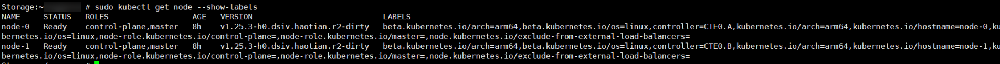
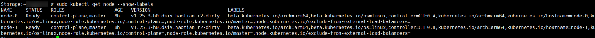

后续注册Kubernetes集群时，如果需要配置节点选择器，可执行本节操作，通过命令的方式获取节点标签。
- 通过后台登录Kubernetes集群。
- 执行kubectl get node --show-labels命令。可通过“LABELS”参数所在列查看节点的标签。


当使用openshift，需要执行oc get node --show-labels命令查看节点标签。
后续注册Kubernetes集群时，如果需要配置节点选择器，可执行本节操作，通过命令的方式获取节点标签。

当使用openshift，需要执行oc get node --show-labels命令查看节点标签。